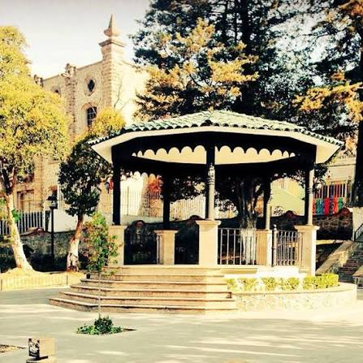
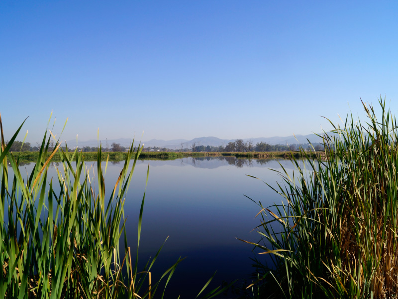
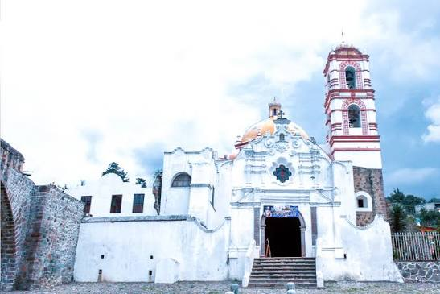
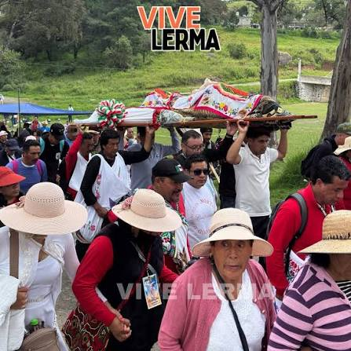
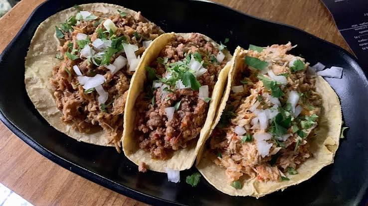
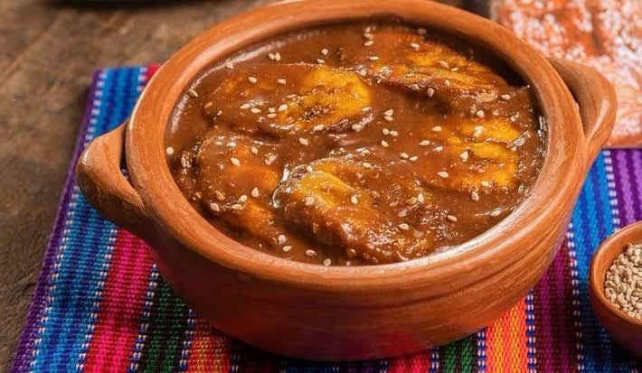
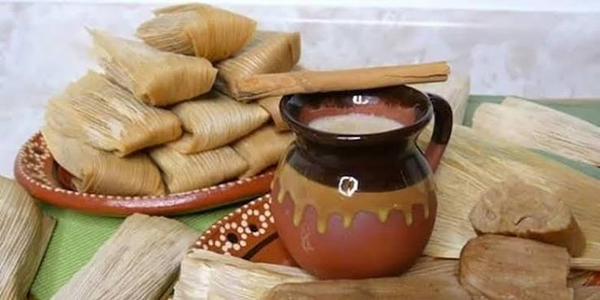

Conoce San Nicolás
Descubre los lugares, las costumbres y la comida tradicional de nuestra comunidad.
Inicio
¿Listo para aprender sobre San Nicolás?
Bienvenido
:V
Te presetamos informacion general de San Nicolas

San Nicolas
San Nicolas
San Nicolás Peralta es una localidad perteneciente al municipio de Lerma en el Estado de México Población: Aproximadamente 5,265 habitantes según datos del INEGI.
Lugares para visitar
Los mejores lugares para conocer.

La Laguna
La Laguna
es un cuerpo de agua y humedal natural que forma parte de las Ciénegas del Lerma, ubicado en la localidad de San Nicolás Peralta,
en el municipio de Lerma, Estado de México

Manuel Bernal
Manuel Bernal
La biblioteca pública de San Nicolás Peralta en Lerma, Estado de México, se llama oficialmente
"Manuel Bernal" (con número de colección 6296 en la Red Nacional de Bibliotecas Públicas).

La Iglesia
La Iglesia
Conocida también como la Parroquia de San Nicolás Peralta
es un templo histórico del siglo XVIII ubicado en la comunidad de San Nicolás Peralta, en el municipio de Lerma, Estado de México
Costumbres
Cada pueblo tiene sus costumbres

Paseo de los Huehuenches
Paseo de los Huehuenches
Se celebra cada 1 de enero. Los habitantes se disfrazan y salen a las calles entre bailes y convivencia comunitaria.
Una característica particular de esta tradición es el intercambio simbólico de chicotazos, los cuales se consideran de buena suerte

Fiesta patronal
San Nicolás de Tolentino
10 de septiembre en honor al santo patrono de la comunidad,
cuya figura se venera en el histórico templo local del siglo XVIII. Incluye actos religiosos, música y festejos populares.

Peregrinaciones
Peregrinaciones al Santuario de Chalma
La comunidad participa en tradicionales peregrinaciones a pie o en grupo hacia el Santuario del Señor de Chalma
Comida tradicional
Deliciosos platillos tradicionales preparados al momento.

Carnitas de cerdo
Carnitas de cerdo
Servidas en tacos acompañados de salsas verdes y rojas tradicionales

Guisados en cazuela
Guisados en cazuela
Comida casera que incluye mole verde, mole rojo con pollo o guajolote, y pipián, tradicionales para las celebraciones de la zona

Tamales y Atole
Tamales y Atole
Especialmente elaborados durante las festividades de la comunidad, como el Día de la Candelaria o la fiesta patronal en honor a San Nicolás